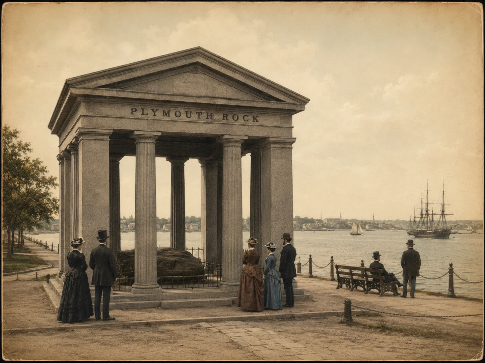

Traditional, hybrid, assisted, or self-published?
Who pays, who controls, who earns, and which labels are doing more marketing than explaining.
Read the guide ↗Publishing guidance
Clear guidance on editing, publishing models, book design, distribution, author websites, and the real costs behind professional production.
Field notes from America’s Hometown



Who pays, who controls, who earns, and which labels are doing more marketing than explaining.
Read the guide ↗Developmental editing, line editing, copyediting, and proofreading without the fog.
Read the guide ↗What KDP and IngramSpark can do, what they cannot do, and why author account control matters.
Read the guide ↗Credibility, search visibility, email growth, sales paths, and a platform that survives launch week.
Read the guide ↗Concept, typography, hierarchy, genre signals, thumbnail performance, and production specifications.
Read the guide ↗The visible labor, hidden labor, contractor costs, revisions, management, risk, and profit behind the invoice.
Read the guide ↗Choose your starting point
Publishing advice is most useful when it helps resolve an actual choice rather than producing seventeen new browser tabs.